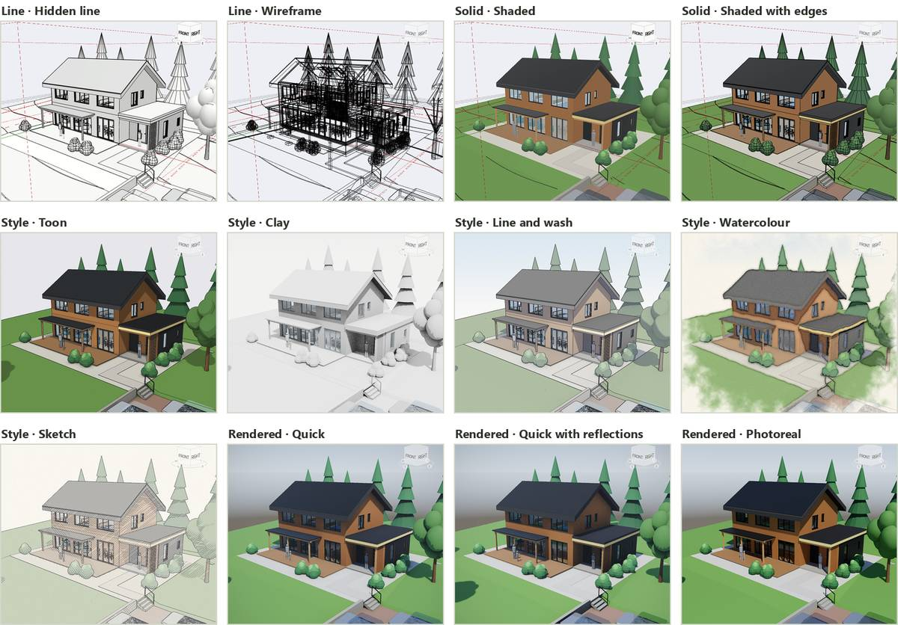
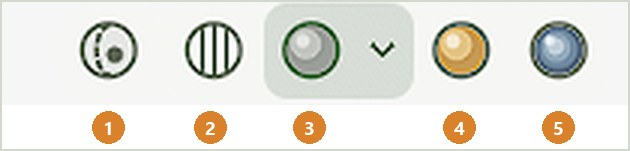
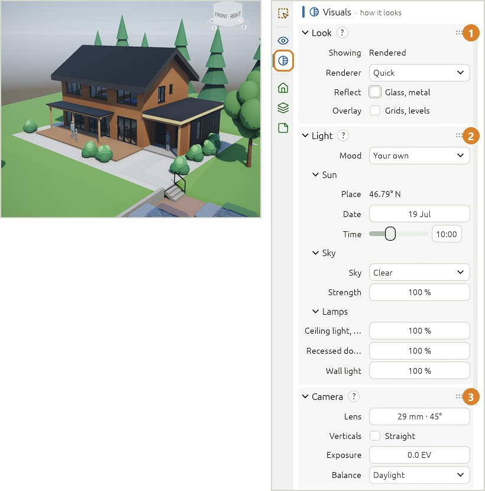
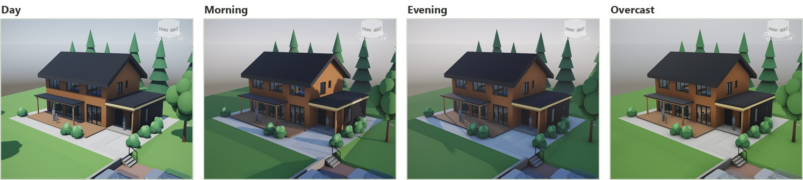

Render and light
The 3D view can show the model as lines, as shaded surfaces, in a drawing style, or rendered with the sun, the sky and the model's own lamps. You pick the look with the buttons in the 3D view's header; everything else about how it looks is in the Visuals tab of Properties.

The display buttons

| Button | What it shows | |
|---|---|---|
| 1 | X-ray | See through walls and slabs, in the Line and Solid looks |
| 2 | Line | Edges only: Hidden line (white surfaces and their visible edges, like a drawing) or Wireframe (every edge, the hidden ones too) |
| 3 | Solid | Shaded surfaces in their materials' colours: Shaded or Shaded with edges |
| 4 | Style | A drawing style: Toon, Clay, Line and wash, Watercolour or Sketch |
| 5 | Rendered | Lit by the sun and the sky: Quick, Quick with reflections or Photoreal |
Each button shows the look of its kind you used last. The small arrow beside the lit button lists its looks, so Hidden line and Wireframe are one click apart.
A Style or Rendered look is made while the view is still: move the view and it shows shaded, stop and the picture comes back, a rough one first and then the full one. Photoreal bounces real light and gets cleaner pass by pass, the longer the view stays still. Grids, levels and dimensions are left off a Style or Rendered look; Overlay puts them back.
The Visuals tab

Open it from its icon on the tab rail, with the 3D view in front.
- Look: Showing names the lit display button; the rows under it are that button's (below).
- Light: the mood, the sun, the sky and the lamps.
- Camera: lens, verticals, exposure and white balance.
Further down, Output keeps a render.
Look
- Hidden (Line): Hide the back gives hidden line; off, wireframe.
- Edges (Solid): Drawn over draws every edge over the shaded surfaces.
- Style: the drawing style the Style button shows.
- Renderer: Quick (sun and sky, soft shadows, darker corners) or Photoreal (real light, bounced). Reflect › Glass, metal makes them reflect the scene in Quick.
- Overlay › Grids, levels: grid bubbles, levels and dimensions over a Style or Rendered look. Saved images leave them out.
Light

- Mood sets a moment of light in one go: Day, Morning, Evening, Overcast or Night. It sets the time, the sky and the exposure; change any of them and the mood becomes Your own.
- Sun: the Place is the project's latitude and true north, set in Manage › Project information (Paris until you set one). Drag Date and Time to move the sun; the time is solar time at that place.
- Sky: Clear (a strong sun, sharp shadows), Hazy (a weaker sun, softer shadows) or Overcast (grey light from everywhere, no hard shadows). Strength is how much the sky lights the shade and the rooms inside; the sun is not changed.
- Lamps: the model's light fittings light the Rendered looks. Each group of fittings has a strength here, and 0 turns it off. What one fitting gives (its output, colour, beam and group) is on the fitting: select it and look in Properties. The Night mood needs light fittings in the model; place one from Model › Objects › Lighting.
The sun and the sky light the Style and Rendered looks; lamps light the Rendered ones.
Camera
| Row | What it does |
|---|---|
| Lens | in millimetres, as on a full-frame camera: 18 to 24 mm for rooms, 28 to 35 mm for a house from the street, 50 mm and up for a long view. A parallel view has no lens; switch the view to perspective for one |
| Verticals › Straight | keeps the edges of walls upright, as an architect's shift lens does, where a tilted camera would make them lean. It doesn't apply when you look steeply up or down |
| Exposure | in stops: about 0 outdoors, +3 inside by day, +7 by lamplight |
| Balance | the white balance: Daylight, Cloudy, Warm or Lamplight. With Lamplight, a room at night reads white instead of orange. It changes the colour, not the brightness |
Output: keeping a render
- Size: As the 3D view, or a set size: Wide 1920 × 1080, Tall 1080 × 1920, Square 1080 × 1080, Portrait 1080 × 1350, Banner 2560 × 1440 or Sheet 3508 × 2480. Another shape than the view's shows more or less at the sides.
- Render and keep renders the view at that size in the background and keeps it in the project. While it works, Making shows its progress and Stop drops it. When the size is As the 3D view, the button is Keep as a render: it keeps the picture already on screen.
- Save image… saves the view as it is rendered now as a PNG, wherever you choose.
Renders
A kept render is a picture in a Renders folder beside the project file, listed in the Renders group of the project browser. The group's + keeps the 3D view as it is rendered now. Click a render to open it in a Render view, as you would a plan or a sheet; Properties then shows its Render tab.
- Zoom with the steps or the wheel, drag to pan, double-click to fit it. One button shows it at its real size, one pixel to a pixel.
- Crop… frames part of it, Free or at a set shape (Wide 16:9, Tall 9:16, Square, Portrait 4:5, Banner, Sheet). Keep the crop saves what is inside as a new render; the first one stays as it was.
- Pick colours reads a colour off the picture: the Pointer row shows the colour under the pointer, and a click keeps it in the list and copies its code.
- Add an image brings in a PNG or JPEG made elsewhere (a photo, a reference, a render from another program). It is copied into the project's Renders.
- Each render keeps the look, light and view it was made with. Back to its view puts the 3D view back where it was, to render it again.
See also Navigate the 3D view and Graphic styles.